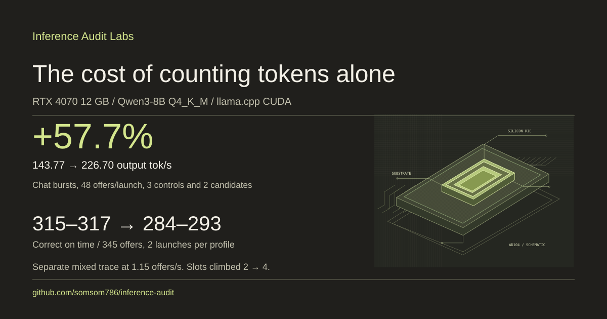

RTX 4070 case study
The cost of counting tokens alone.
A faster queue can still leave more customers waiting. We tested whether increasing serving slots improved the work users actually received.

One change, two outcomes
On a homogeneous chat burst, increasing from two slots to four raised valid output from 143.77 to 226.70 tok/s. The test used the same RTX 4070, Qwen3-8B Q4_K_M, llama.cpp CUDA b12427 and a 16,384-position f16 KV pool. Each launch offered 48 requests. There were three controls and two candidates. Evidence and denominator
On the fresh mixed trace, two slots completed 315–317 of 345 offers correctly and on time, versus 284–293 on four slots. First-token p95 fell from 1.616–1.741 s to 0.753 s, while completion p95 rose from 3.714–3.820 s to 4.523–4.678 s. These are ranges across two fresh launches per profile at 1.15 offers/s. Both missed the 95% per-family contract somewhere on the tested grid. Matched-run evidence
A fixed cache budget gave each of the four slots half the context allowance. The mixed trace fit both profiles. Workloads that need more than one four-slot window require a separate qualification.
Where the bill can change
A lower cost per answer requires a gain in correct work finished on time for your own workload. Even then, the invoice changes only when GPU hours or provisioned capacity can actually fall. The chat-burst gain did not establish deployed capacity or a customer saving.
Six hours exposed a different limit.
The completed Qwen3-8B endurance archive contained 13,926 completed transactions and 13,155 correct on time. Only 776 of 1,392 older agent tasks were correct. The runtime stayed up for the scheduled study. That agent workload still failed its correctness threshold. Download the aggregate recount
What we’d test next
Later research checked workload transfer, sustained operation and tool round trips. Results varied by model and traffic pattern. The native MTP path on the installed Qwen3.5 derivative still needs a verified draft head, a supported engine and an idle-GPU control. The current relaunch adds an offline feasibility screen. GPU contention gated new measurements.
The engineering question for an operator is whether a candidate helps on representative traffic while meeting latency, correctness and context requirements. Aggregate speed is one part of the answer.